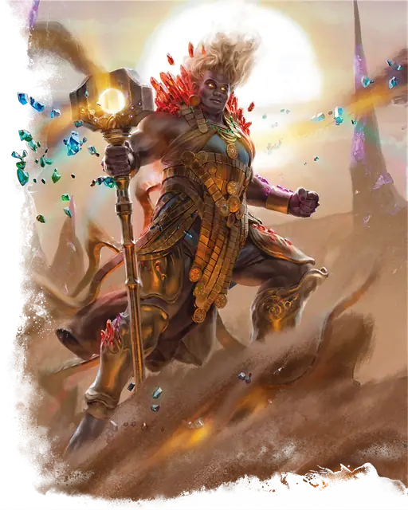

Дао
Dao
Большой Элементаль (Гений), Нейтральный

Класс Защиты 18 Инициатива +1 (11)
Хиты 200 (16к10 + 112)
Скорость 30 футов, Полёта 30 футов (парит), Копания 30 футов
| мод | спас | ||
|---|---|---|---|
| СИЛ | 23 | +6 | +6 |
| ЛОВ | 12 | +1 | +5 |
| ТЕЛ | 24 | +7 | +7 |
| мод | спас | ||
|---|---|---|---|
| ИНТ | 12 | +1 | +1 |
| МДР | 13 | +1 | +5 |
| ХАР | 18 | +4 | +4 |
Иммунитеты Окаменевший
Чувства Тёмное зрение 120 футов, пассивное Восприятие 11
Языки Первичный (Терран)
Опасность 11 (7 200 опыта; БВ +4)
Особенности
Скольжение сквозь твердь. Дао может перемещаться сквозь немагические необработанные землю и камень. При этом дао не тревожит материю, через которую перемещается.
Восстановление элементаля. Когда дао умирает за пределами Стихийного плана Земли, его тело превращается в грязь и спустя 1к4 дня заново возрождается со всеми Хитами где-то на плане Земли.
Сопротивление магии. Дао совершает с Преимуществом спасброски от заклинаний и прочих магических эффектов.
Желания. Дао с 30-процентным шансом известно заклинание Желание. Если оно известно дао, он может сотворить заклинание только от имени другого существа (кроме гениев), если то сообщит ему желание понятным для дао способом. Сотворение Желания таким образом не накладывает на дао негативные эффекты, указанные в последнем параграфе описания заклинания. После того, как дао сотворит это заклинание три раза, он не может сделать это снова, пока не истечёт 365 дней.
Действия
Мультиатака. Дао совершает три атаки Земляным молотом или две атаки Взрывом земли.
Земляной молот. Бросок рукопашной атаки: +10, досягаемость 5 фт. Попадание: 20 (4к6 + 6) Дробящего урона. Если цель — существо Большого размера или меньше, она Опрокидывается.
Взрыв земли. Бросок дальнобойной атаки: +10, дистанция 120 фт. Попадание: 15 (2к8 + 6) Дробящего урона. Промах или попадание: Земля взрывается под пространством цели и создаёт следующий эффект. Спасбросок Ловкости: Сл 16, каждое существо в 10-футовой Эманации, исходящей от цели, включая её саму. Провал: 10 (3к6) урона Звуком.
Сотворение заклинаний. Дао сотворяет одно из следующих заклинаний, не нуждаясь в Материальных компонентах (заклинательная характеристика — Харизма, Сл спасброска заклинаний 16):
Неограниченно: Изменение формы камня, Обнаружение зла и добра, Обнаружение магии
1/день каждое: Газообразная форма, Движение почвы, Каменная стена, Невидимость, Планарный переход, Создание прохода, Языки
Бонус мастерства +4
Среда обитания Подземье, Стихийный план Земли
Сокровища Инструментальные
Дао
Гений земли
Дао — гении минералов и самоцветов, которые воплощают в себе твёрдость камня. Благодаря врождённой магии они способны беспрепятственно перемещаться сквозь землю на недоступную другим глубину. Дао восхищают сокровища земли, такие как необработанные самоцветы, украшения из чистых металлов и диковинные окаменелости. В обмен на такие богатства они могут раскрыть тайны подземелий: пути через Подземье, местонахождение погребённых развалин или целых подземных царств.
Многие дао обитают на Стихийном плане Земли. Здесь они создают потрясающие города, вместилища природных богатств. Среди подземных царств особое место занимает запутанная, извилистая область — Великая Мрачная впадина или Семикратный Лабиринт, в котором спрятаны Город Самоцветов, Железный Тигель и Магнитный пролив.